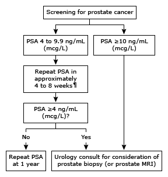

PSA: prostate-specific antigen; MRI: magnetic resonance imaging.
* A serum PSA <4 ng/mL (mcg/L) generally is considered normal. However, the threshold value is controversial, and men with PSA levels below 4 ng/mL (mcg/L) may have prostate cancer. If the patient takes a 5-alpha reductase inhibitor, a correction factor must be applied to the PSA result for accurate interpretation, because such medications are known to lower PSA results. Reference ranges can also vary depending on the patient population (eg, age, race, and weight), random variation, and clinical laboratory. Interpretation of a specific abnormal test result should be based upon the reference range reported by the laboratory.
¶ Repeat testing should be performed after abstinence from ejaculation and/or bicycle riding for 48 hours.